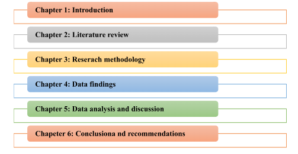

Introduction
Homeless is the circumstances where the people are excluded to meet their basic needs of housing and they start living without any regular, secure, safe and adequate housing due to lack of or no steady income of the people (Wright, 2017). A home is not just a physical space for the person, but it is an important factor in everybody’s life that provides identity, security, roots, place of emotional wellbeing and sense of belonging (Main, 2017). In the recent era of globalisation, there is a high concern regarding homelessness which is a serious issue recently for which there are many people who are suffering from the problem of homelessness (Herndon et al., 2016). Through this researc , it is possible to identify the issues of homelessness as well as conduct in depth analysis regarding the factors which leads the people towards homelessness. The research is necessary to be conducted as there is rising numbers of people who are suffering for such issue of homelessness. Recently, it has been evident that there is rapid increase in the population in New York who suffer from homelessness and this research provides an opportunity to the researcher to conduct the study on homelessness and analyse and evaluate the cause and effects of homelessness in considering the city New York (Asgary et al., 2016). There are many causes of the problem of homelessness which includes structural factors of economic and societal issues, poverty, discrimination in ethnicity, shortage of housing, unemployment, lack of steady income generation of the people ,domestic and family violence and health and mental issues for which there are increasing numbers of people who are suffering from the issue homelessness (Main, 2017).
Background and rationale of the study
In the recent era of globalisation, the issue of homelessness is a major concern of the policy makers as there is rapid increase in the numbers of the people who are suffering from homelessness (Passaro, 2014). It is therefore a serious issue in the recent years which deteriorates the wellbeing of the individuals and the people cannot imporve their living standard due to the problem of homelessness. Shelter is a basic need of the individuals living in the society, but the issue of homelessness reduces the safety and security of the individuals where the people leave their lives without a shelter or particularly fixed home. In this regard, it is a big issue now where the rising numbers of people are suffering from the problem of homelessness (Erickson, and Wilhelm, 2017). The primary issues of harmlessness are such as poverty, inequality, no steady income, lack of affordability, no income generation, high unemployment and lack of industrialisation for which the people are suffering a lot to afford a home becoming homeless. Recently, it is a serious issue which needs to be analysed so that the policy makers can identify the actual cause of the issue of homelessness mainly in New York which is the second largest country of homelessness where there are high numbers of people who are suffering from homelessness (Skinner, 2016). The research is hereby relevant to be conducted for understanding the issue of homelessness mainly in the ethnic monitory group in New York where people from Minority group suffer a lot to afford a home and they are suffering from the issue of homelessness (Maher et al., 2016). The study focuses on the problem of homelessness and it impacts in the social communities of New York where there is high unemployment, discrimination on the basis of race and ethnicity and income inequality for which the people mainly from the minority group are suffering through the problem of homelessness. The research topic is therefore effective and useful to mitigate the issue through successful analysis of the causes of homelessness and it impacts on the social communities of New York.
As per the findings, there is rapid increase in the numbers of homelessness people in the city, New York which raises further issues in the city due to economic instability, unemployment and negative social development as well as discrimination among the ethnic minority group as compared to the white people (Knoper et al., 2016). The figure below, shows the graph of the numbers of people in the New York which are suffering through the problem of homelessness. As per the figure, it has been evident that, the numbers of homelessness people are raising rapidly year to year which is due to unemployment in the city, discrimination in the ethic minority people and lack of social development and economic stability in the country which leads to rising issue of homelessness among the people. The figure indicates that, in 2018, there are approximately 63025 people in the New York who are suffering through the problem of homelessness which is increasing per year at a rapid rate.

As per the figure below, it has been seen that, the number of families in each night in the New York city who are homeless is also raising at a rapid rate which refers that the city is unable to improve income equality and employment for which the families are unable to meet their basic needs of shelter, safety and security. this is hereby a great issue in the recent years for which people are suffering in the country. as per the statistics, there are approximately 15421 families who are homeless in the city which is a negative factor for the country’s economic position and growth as well as social development.


The numbers of single adults, who are homeless, are also increasing at a rapid rate which indicates that they are unemployed in the city and they cannot afford to purchase or rent house for their safety, belonging and security. It further refers that there is discrimination for the minority people who are migrated from other country such as Africa and others and they cannot get proper employment benefits and opportunity to generate income for meeting their basic needs to live their lives.

The government body take the initiatives in the New York City to give shelter to the people who are homeless, and it has been seen in the figure below that, there are 63025 people who need shelter from the municipality. As per the figure, there are 17228 adults, 22907 children and 22890 adults in families who need shelter from the municipality of the city New York (National Alliance to end homelessness, 2018b).

Hereby, it has been that, there are increasing numbers of children, single adults and the adults in families who are homeless, and they require proper municipal shelter for living their lives safely and securely. It has been also evident that, most people who are homeless in the city New York are from ethnic minority group as compared to the whites and therefore there is disproportionate share of the homeless population with high discrimination for the ethnic minority groups. The rate of ethnic minority group who are homeless is much higher than the whites and Asians and it is increasing rapidly. Racial and ethnic disparity in homelessness is increasing year to year and it becomes a serious concern for the government body of New York as it affects social development and economic growth of the country (National Alliance to end homelessness, 2018c).
From slavery to segregation, the ethnic minority groups are excluded from the equal rights and opportunities and this leads to discrimination and disparity in the context of homelessness. The disparities are there also in the context of poverty, employment, housing, health and social care where the ethnic minority people are excluded from enjoying the public health service, housing and employment and this leads to higher numbers of homeless people who are from ethic minority group. Hereby, it has been evident that, there exist discrimination between the ethnic minority groups and the whites where the numbers of minority people are much greater than that of whites who are homeless. In this recent year, it is a great concern of the policy makers as well as for the governing body of the New York City as this discrimination and the issue of homelessness deteriorate the country’s position in the international index. Due to such issue of homelessness, the country is also suffering from low economic growth, unemployment, poverty, income inequality and lack of social development where the government cannot manage the country for securing future development (National Alliance to end homelessness, 2018d). Hereby, it is important to analyse the causes of homelessness in the city New York as well as influence the government body of the city to take further actions to mitigate the issue and foster income equality, provide equal opportunities irrespective of the ethnic minority group people and whites. enhance employments and improve social development.
Aims and objectives
The aim of the research is to analyse the causes of the issues of homelessness mainly in the ethnic minority group in the city, New York and identify the cause of unemployment which is a serious issue and the main cause of homelessness in the city. Through this study, it is also possible to recommend some effective suggestions to mitigate the issue if homelessness in New York.
The objectives of the research paper are,
- To identify the causes of homelessness
- To analyse the negative impact Homelessness is having in the community of New York
- To acknowledge the actual causes of high homelessness among the ethnic minority groups as compared to white in New York
- To gather the evidence of the causes of unemployment in the city, New York
- To evaluate the strategies of the New York government in solving homelessness in the New York
- To recommend some suitable suggestions for reducing the issue of homelessness for the ethnic minority group in New York
The research questions ae as follows,
- What are the causes of homelessness?
- What is the negative impact Homelessness is having in the community of New York?
- What are the actual causes of high homelessness among the ethnic minority groups as compared to white in New York?
- What are the reasons of unemployment in New York?
- What strategies does the New York government have in solving homelessness in the New York?
- What are the possible recommendations for reducing the issue of homelessness for the ethnic minority group in New York?
Methodology
Research methodology is one of the important factors in the academic research where the researcher selects the best possible methods of conducting the research systematically. In this study, as per the research onion, the researcher will select appropriate research approach which is deductive rather than choosing inductive research approach. Through the deductive research approach, the researcher will be able to analyse the collected data and information in the basis of existing readings and understanding as well as literatures (Taylor, Bogdan and DeVault, 2015). However, the inductive approach indicates that the researcher will analyse the collected data and explore and develop new theories and models on the basis of data evaluation. Hereby, in this research study, it will be beneficial for the researcher to select the deductive research approach which will provide a scope to the researcher to analyse and evaluate the gathered data on the basis of the existing literatures, information and data.

As per the method, the researcher selects mix methods in this study and consider both the primary and secondary research for successful analysis and evaluation. Considering the data collection method, there are two types of collecting authentic and valid information and data which are primary and secondary sources through which the researcher can collect proper data which will be effective for the study to analyse the above-mentioned research topic (Taylor, Bogdan and DeVault, 2015). In this regard, the researcher collects secondary information from the secondary sources such as books, journals, articles, online published journals and newspapers which are the authentic sources from which the researcher can collect the valid information that will helps the research to analyse the topic of the research proficiently by utilising the gather data and understanding. On the other hand, there is primary sources of information where the researcher considers interview technique to collect proper data and information related to the issue of homelessness in the city of New York.

In this regard, in order to conduct the interview process, the researcher wills elect 5 personnel from the Government Body who are considered as policy makers in the city of New York. this is one of the most authentic sources of primary information where the researcher can collect effective and authentic data and information form them through the interview process. In this regard, the researcher will conduct face to face interview by convincing the personnel of the government body so that they will be able to discuss the serious of issue of homelessness in the city of New York. Through the interview process, the researcher will conduct cross questions and improve discussion through proper communication and interaction which will be beneficial for the study to analyse the collected information so that it is possible to evaluate the research topic of analysing the issue of homelessness and it impacts on the social communities of the New York. Hereby, both the data collection technique, secondary and primary are useful in this study where the researcher will gather effective information that will be beneficial to conduct the in-depth research about the problem of homelessness in New York.

Additionally, the data analysis technique is necessary for the researcher where the researcher will try to evaluate and analyse the collected data and information for demonstrating the understanding of the problem of homelessness in New York. In this regard, there are two types of data analysis technique which are qualitative data analysis and quantitative data analysis. In this particular research paper, the researcher will select qualitative research technique through which it is posisbel to analyse and evaluate the collected primary information on the basis of existing secondary information, concepts of homeless and the causes of homeless. Hereby, the qualitative data analysis technique will be advantageous for the researcher in this particular study to analyse the primary data collected through interview process with the representatives of Government Body in the city of New York, by utilising the secondary information. Therefore, the deductive research approach, secondary and primary data collection process and the qualitative data analysis technique swill be beneficial for the researcher to conduct in depth analysis of the issue of homelessness and its impacts on the society.
Ethical considerations need to be followed and maintained by the researcher in conducting the academic research paper so that the researcher can complete the task ethically without any legal issues. in considering the ethical practice, the researcher needs to collect effective sources from the authentic website or genuine person who can provide valid answer. In this research, the researcher selects secondary data collection technique where the researcher collects data and information from the secondary sources of information such as books, website, online journals, published journals and business letters through which it is possible to gather authentic information. In order to use the information published though books and journals, the researcher will follow academic ethics and he or she will ensure that the collected information will be utilised only for this academic research purpose, not any other purposes. On the other hand, conducing the secondary data collection techniques requires that there will be no such plagiarism work and the researcher needs to cite the sources from where the information are collected. In this study, the researcher will avoid academic misconduct and analyse and evaluate the ideas getting from the books and journals for mitigating the issue plagiarism. Moreover, the researcher will cite the authentic sources from where the data and information are collected. Hereby, during the secondary data collection process, the researcher will be concerned about protecting the information and utilising it only for the academic research as well as the researcher will avoid the issue of plagiarism and cite the valid sources where the information is utilised in the research paper.
On the other hand, during the primary data collection process, the researcher needs to be fair with the participants as well as convince the participants to engage with the survey so that the researcher can get and gather authentic information from them. In this regard, the researcher will maintain confidentiality of the collected data by protecting the information through implementation the Data protection Act 1998 which will provide a scope to the research to handle the collected information safely and securely. This further helps the researcher to build string relationship with the participants and ensure the respondents that their feedback and answers will be utilised only for the academic research paper not for any other purposes. Additionally, the researcher will not force anyone to participate in the survey, rather he or she will convince the respondents to take active part in the survey through which it is easy for the researcher to collect valid and authentic information which will be beneficial for better evaluation and analysis in this research for understanding the research topic which is the causes of homelessness and its impacts on the society in the city, New York. The researcher in this regard will maintain data safety and security, storing the data properly, maintaining confidentiality, managing the participants fairly, maintaining transparency and accountability during the research process so that everybody will be treated fairly, and they will feel secure to share their views about the above-mentioned research topic.
Indicative research time table
Reference List
- Asgary, R., Sckell, B., Alcabes, A., Naderi, R., Schoenthaler, A. and Ogedegbe, G., 2016. Rates and predictors of uncontrolled hypertension among hypertensive homeless adults using New York City shelter-based clinics. The Annals of Family Medicine, 14(1), pp.41-46.
- Coalition for the homelessness, 2018. Homelessness in New York City. [online] Available at: http://www.coalitionforthehomeless.org/wp-content/uploads/2018/11/NYC-Homeless-Shelter-Population-Charts-9-2018_new.pdf [Accessed 15th December 2018].
- Erickson, J. and Wilhelm, C., 2017. Housing the homeless. London: Routledge.
- Herndon, B., Asch, S.M., Kilbourne, A.M., Wang, M., Lee, M., Wenzel, S.L., Andersen, R. and Gelberg, L., 2016. Prevalence and predictors of HIV testing among a probability sample of homeless women in Los Angeles County. Public Health Reports.
- Knoper, L., Samosiuk, R., Lehman, M., Wanic, H. and Lo Piccolo, M., 2016. Collaborative Platforms for Community Building: Responding to Issues of Homelessness in Grand Rapids through Design Thinking.
- Maher, L., Bennett, S., Costa, C., Fookes, R., Matthews, J., Clark, E. and Lorimer, A., 2016. Dialogues that Dig Deeper: Surfacing the Multiple Faces of Homelessness in Grand Rapids, MI (Report One).
- Main, T.J., 2017. The Homeless of New York. In Housing the Homeless (pp. 82-105). London: Routledge.
- Main, T.J., 2017. Homelessness in New York City: Policymaking from Koch to de Blasio. NYU Press.
- National Alliance to end homelessness, 2018a. Racial inequalities in homelessness, by the numbers. [online] Available at: https://endhomelessness.org/resource/racial-inequalities-homelessness-numbers/ [Accessed 15th December 2018].
- National Alliance to end homelessness, 2018b. New York. [online] Available at: https://endhomelessness.org/homelessness-in-america/homelessness-statistics/state-of-homelessness-report/new-york/ [Accessed 15th December 2018].
- National Alliance to end homelessness, 2018c. Racial inequality. [online] Available at: https://endhomelessness.org/homelessness-in-america/what-causes-homelessness/inequality/ [Accessed 15th December 2018].
- National Alliance to end homelessness, 2018d. State of homelessness. [online] Available at: https://endhomelessness.org/homelessness-in-america/homelessness-statistics/state-of-homelessness-report/ [Accessed 15th December 2018].
- Passaro, J., 2014. The unequal homeless: Men on the streets, women in their place. London: Routledge.
- Skinner, K., 2016. People experiencing homelessness: How libraries can be community collaborators and catalysts for change.
- Taylor, S.J., Bogdan, R. and DeVault, M., 2015. Introduction to qualitative research methods: A guidebook and resource. New York: John Wiley & Sons.
- Wright, J., 2017. Address unknown: The homeless in America. London: Routledge.